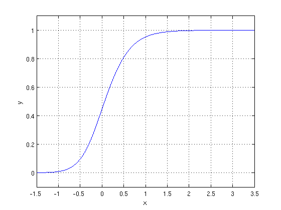

Interpretable Parameterisations
Interpretable models are incredibly useful for getting users to trust your model (and understand when not to trust it). In projects helping subject matter experts make decisions it helps them see what’s going into it, and what adjustments need to be made. However a large part of what makes a model interpretable is not just its form, but how it’s presented. Reparameterising it in terms that make sense from a decision makers point of view can make all the difference in gaining insight, trust and adoption.
A simple example of this is in Regression and Other Stories by Gelman, Hill and Vehtari. With linear models the intercept term only makes sense when it makes sense to have all the predictors zero, otherwise it’s hard to interpret. A more useful parameterisation is to replace the intercept with the value at the average value of the other predictors.
For example suppose you’re modelling the weight of adult humans in Australia. The first model you build is a constant model, which gives the intercept as the average value weight = 80kg. Then based on Body Mass Index you add height^2 as a predictor and get weight = 40kg + (23kg/m^2) height^2. The intercept went down a lot when you added the extra term, what happened? The intercept represents the weight of a 0m high adult, which is meaningless - it’s out of the valid range of the model. However if we reparameterise it relative to average height weight = 80kg + (23kg/m^2) * (height - 1.7m)^2, it’s much easier to see not much has changed with the constant term. As we add more predictors we can make the model more interpretable by framing it in these terms. For example if we add gender, we could have the average difference weight between the genders represented explicitly as (86kg - 72kg) * is_male, rather than the more opaque 6kg * is_male. Even better would be to present the models separately for each gender (even if they share parameters), which makes the differences by gender directly stand out.
This doesn’t just apply to linear regression, but to more complex models with a handful of parameters too. In Regression and Other Stories they talk about the divide-by-4 rule for logistic regression. In the model \(logit^{-1}(\alpha + \beta x)\) a unit difference in x makes at most a difference in \(\beta / 4\) in the probability (at a probability of 50%, and smaller near the extremes). When communicating a logistic regression to non-statisticians, especially one where most predictions are in the middle, the coefficient \(\beta / 4\) is a much better parameter to explain than \(\beta\) itself.
Another useful trick in generalised linear models is to divide the coefficients by the standard deviation, especially when the predictors are on different scale. If you’ve got both age and income as predictors, even if they have equal weight, in natural units the income coefficient will be much lower because it has a huge variation in tens of thousands of dollars, but age only varies by scores of years. To the untrained eye it makes income seem much less important, and the relative importance of factors is harder to reason about. Dividing by the standard deviation puts them on the same scale, in terms of the impact they can have on the outcome variable (assuming they are similarly distributed), which makes it much easier to compare models.
A more complex example is the Generalised Logistic Function, which is an S-shaped curve that has the useful property of quickly switching between two extreme values. One way to write this is \(Y(t) = \frac{A \left(C + e^{-Bt}\right)^{1/\nu} + J}{\left(C + e^{-Bt}\right)^{1/\nu}}\), but it’s not clear what all these things mean.

Wikipedia puts it in a much more interpretable form: \(Y(t) = A + { K-A \over (1 + Q e^{-Bt}) ^ {1 / \nu}\), where A is the lowest value it can reach and K is the highest value, and Q is the initial value at t=0. The other values; the growth rate B, the shape factor \(\nu\) are harder to interpret. However you could further reparameterise these for a use case; maybe there’s two other points on the curve that mean something and we could use these instead of B and \(\nu\). Or suppose this represents the number of people that would churn from a product at a given price, and when multiplying by the price we get the profit. Then the price at which profit is optimised, and the optimal profit (perhaps relative to the current profit) are great, meaningful parameters.
In these more general cases you may need to calculate the parameterisation functions numerically and the parameterisations may break down outside of some region; what happens when there’s no optimal profit? However it’s worth the effort if it helps communicate how the model works, helps understand changes to the model, and builds trust and adoption.